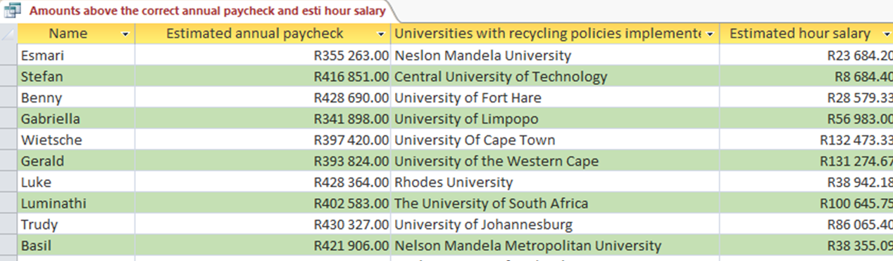
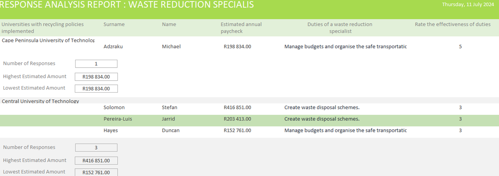
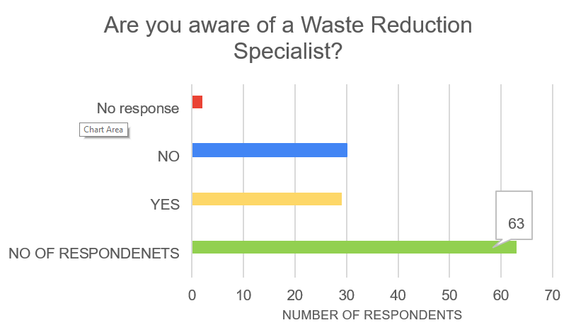
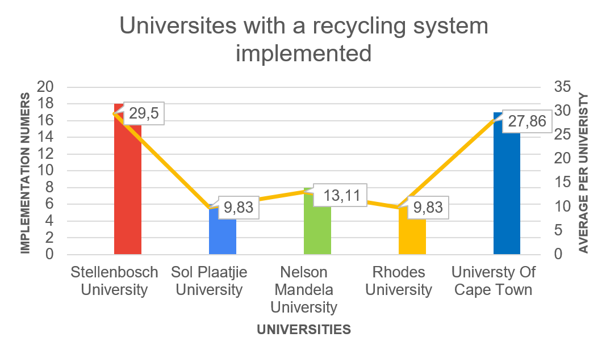
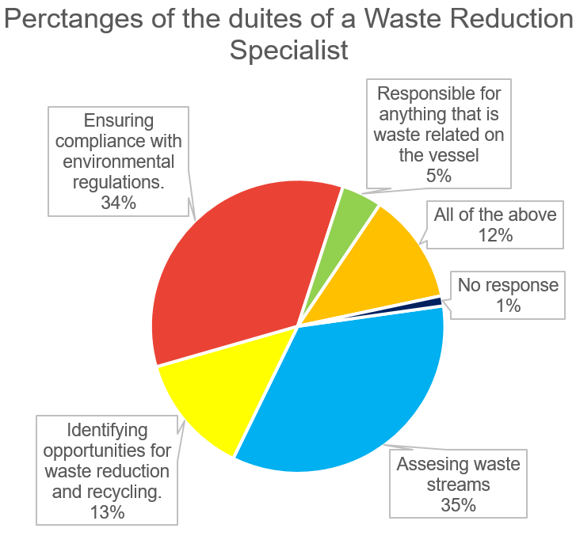
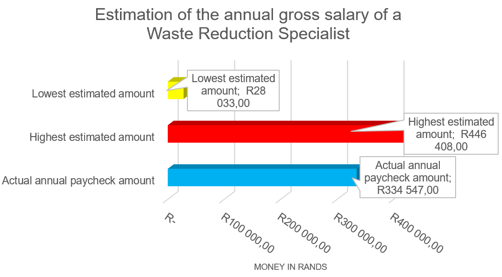

Visual Representation
Graphs obtained from the analysis from database (microsoft excel).

It is a query designed to show the respondents Name, Institution of their choice and as well as the Estimated Annual Gross Pay Check which are below the correct annual gross pay check and as well as the estimated hour salary.It is a query design to show the respondents name and surname with their average estimated annual pay check amount which chose Stellenbosch University as the Institution where you can get a Waste Reduction Specialist degree.

It is a report designed to show all the fields of the Respondents Table grouped by the Institution where you can obtain a Waste Reduction Specialist Degree with calculations in the footer which show the number of respondents that chosen Institution, the highest estimated annual gross pay check and the lowest annual gross pay check
Graphs obtained from the analysis from spreadsheet (microsoft excel).

It is a horizontal bar graph derived from the information collected from the survey that was issued out to the public, this bar graph shows how many people responded and from that total number being 63. It was split into responses of “Yes” and “No” to the question on the title of the graph being “Are you aware of a Waste Reduction Specialist”. This shows that about approximately 50% of people who answered the survey they do not know about the Waste Reduction Specialist and the difference are aware of Waste Reduction Specialists.
| Are you aware of a Waste Reduction Specialist? | |
|---|---|
| Number | |
| NO OF RESPONDENETS | 63 |
| YES | 29 |
| NO | 30 |
| No responses | 2 |

It is a bar graph with a line graph, the figure gives the reader insight on the numbers of each University that might be considered to have a recycling system implemented by a Waste Reduction Specialist. The Line Graph is a shows the average of each university obtained number against the other universities and against the overall average which is 11%
| Universites with a recycling system implemented | |
|---|---|
| Universites | Number |
| Stellenbosch University | 18 |
| Sol Plaatjie University | 6 |
| Nelson Mandela University | 8 |
| Rhodes University | 6 |
| University Of Cape Town | 17 |
| None of the above | 61 |

It is a pie chart; this figure gives the reader insight on the percentages of the duties of a Waste Reduction Specialist chosen by the respondents based on their knowledge.
| Percentages of the duties of a Waste Reduction Specialist. | |
|---|---|
| Duties | Percentages |
| Assesing waste streams | 31% |
| Identifying opportunities for waste reduction and recycling. | 12% |
| Ensuring compliance with environmental regulations. | 31% |
| Responsible for anything that is waste related on the vessel | 4% |
| All of the above | 11% |
| No response(s) | 1 |

It is a 3D bar graph, this above figure gives the reader insight to the estimations of the annual gross salary of a Waste Reduction Specialist made by the respondents, the lowest (R 28 033,00) and highest (R 446 408,00) estimation is compared to the correct annual base amount (R 334 547,00) earned by a Waste Reduction Specialist.
| Estimation of the annual gross salary of a Waste Reduction Specialist. | |
|---|---|
| Levels | Amount |
| Acutal annual amount | R 334 547,00 |
| Highest esitmated amount | R 446 408,00 |
| Lowest estimated amount | R 28 033,00 |